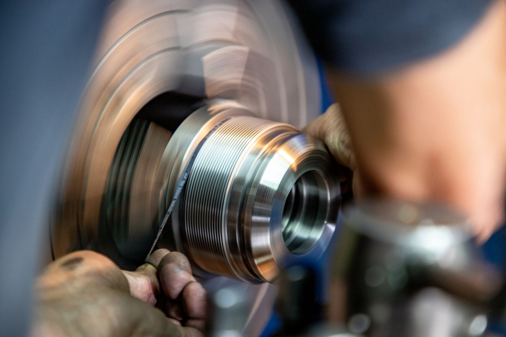

Feldmann Case WorksOskar Feldmann · CNC case machining & titanium finishing · Grenchen, Switzerland
MaterialTi-6Al-4V · Grade 5
Measured floor±0.005 mm
Sheet02 / 04
Sheet 02 — Case files
Three runs, written the way they were measured.
Each file follows the same order: the brief as it arrived, the decisions taken at the bench, and the outcome as the instruments reported it. One file is a success with its inspection plate attached. One is a batch this shop scrapped whole. Both kinds stay in the record.
CHF 8'809.60The cost of the rerun in Case File 02 — machine time, metal and setup, carried by this shop after its own error. The client's price did not change.
Case File 01 · Run FCW-24-118
Forty chronograph cases for Atelier Brandl
ClientAtelier Brandl — named with written consent
ClassC — Chronograph, 42 mm
Quantity40 delivered · 42 blanks started
Agreed tolerance±0.005 mm (Table T1)
FinishMixed — brushed caseband, polished bevels
DeliveredNovember 2024
The brief
Jonas Brandl arrived with a movement, a case drawing and a launch date. His previous supplier had quoted a tolerance the drawing did not need and a price built on it. The brief here was narrower and harder: forty cases at ±0.005 mm on the diameters and bores, a mixed finish, and a measurement sheet his own micrometer could argue with.
Decisions
Two blanks were started beyond the forty, against the printed 5% scrap allowance in Table Q1 — both were needed in the end, one to a pusher bore torn at drilling, one to a handling mark that polishing would only have moved. Pusher bores were drilled before finishing, so no drill ever crossed a finished surface. The mixed finish was sequenced bevels-last: a polished edge cut after brushing stays an edge; brushed after polishing, it does not.
Outcome — the inspection plate
All forty cases inside the agreed band on every feature. Diameters measured on every case; bores and lug width sampled one in five, as stated in the quote. The plate below is the summary sheet that shipped with the run.
Inspection plate — Run FCW-24-118, measured at 20 °C
Feature
Nominal
Tolerance
Measured range
Sample
Case diameter, 3–9 axis
42.000 mm
±0.005
41.997 – 42.004
All 40 cases
Case diameter, 12–6 axis
42.000 mm
±0.005
41.996 – 42.003
All 40 cases
Case height
13.850 mm
±0.030
13.838 – 13.861
All 40 cases
Crown tube bore
5.500 mm
±0.005
5.498 – 5.504
1 in 5 — 8 cases
Pusher bore
2.500 mm
±0.005
2.497 – 2.503
1 in 5 — 8 cases
Lug width
21.000 mm
±0.030
20.982 – 21.014
1 in 5 — 8 cases
“The cases arrived with a measurement sheet I could check against my own micrometer. Three cases in forty sat near the edge of the band; none sat outside it. That is the whole review.”
Case File 02 · Run FCW-24-097
The batch that was scrapped whole
ClientIndependent maker — confidential
ClassS — Shaped / tonneau
Quantity18 ordered · 14 blanks started before the stop
Agreed tolerance±0.008 mm (Class S floor, Table T1)
FinishBrushed
OutcomeBatch scrapped · rerun at the shop's cost
The brief
A first shaped case for an independent maker: eighteen tonneau cases in Grade 5, brushed, at the Class S floor of ±0.008 mm. Shaped cases are the class this shop watches hardest — form surfaces drift before diameters do, which is why Table Q1 carries an 8% allowance for the class.
What happened
The in-process check after case eleven found the drift: one form feature had walked 0.011 mm beyond the agreed band, growing case by case from the start of the run. The cause, found the same day, was two ordinary things compounding — a finishing tool run past its life, and thermal growth in a spindle whose warm-up cycle had been skipped after a weekend stop. The skipped warm-up was on the setup sheet, and the sheet was initialled by the person writing this file. All fourteen started blanks were scrapped. The shop's rule is that a drifted batch is scrap, never a selection exercise: sorting the good from the drifted would have shipped the client a run with two histories.
Outcome
The client was told before the rerun started, with the cause stated the way it is stated here. The rerun — twenty blanks, the full run again at the planner's own arithmetic: 2,580 cycle minutes, 4,280 g of billet, CHF 820 of setup — cost CHF 8,809.60, carried by this shop. The client's price did not change; delivery moved three weeks. Two rules were written out of this file and are still on the wall: the warm-up cycle is a line on the setup sheet, initialled before the first cut, and tool life is counted in cases, not in days.
Case File 03 · Commission FCW-25-031
One case, finished three ways
ClientIndependent watchmaker — confidential
ClassR — Round, 39 mm
Quantity3 cases — one per finish, as a display set
Agreed tolerance±0.005 mm (Table T1)
FinishBrushed · bead-blasted · polished
OutcomeProduction finish chosen: mixed
The brief
A maker with a finished movement and no settled idea of what his watch should feel like in the hand. Rather than describe finishes in adjectives, the shop cut the same Class R case three times and finished each one differently — a display set the maker could hold, wear for a week each, and mark up without mercy.
Decisions — the finishes, priced in hand minutes
The hand times are Table F1's, and they are most of the decision. What each finish shows and what it hides is the rest.
Finish comparison — Commission FCW-25-031
Finish
Hand minutes
Shows
Hides — and the catch
Brushed
22
The grain direction; the case's lines stay readable
Small marks along the grain. A knock can be re-brushed at the bench in minutes
Bead-blasted
12
Nothing — an even matte field
Handling marks, at first. The catch: a local repair means blasting the whole case again
Polished
55
Every bevel, at full brightness
Nothing, for long. It records every handling mark within a week of wear
Outcome
After three weeks of wearing the set in rotation, the maker chose the fourth option the set had pointed at: mixed — brushed caseband, polished bevels, 38 hand minutes per case in Table F1. The bevels carry the light; the band keeps the grain and can be re-brushed when the watch comes back for service. The three display cases stay with the maker, marked as what they are: the argument, in metal, that settled his production finish.

Fig. 03 — Hand work at the wheel. Reference photograph by Alex Domínguez (Pexels) — another shop's bench, the same truth: finishing minutes are hand minutes, and they are priced as such in Table F1.
The next file could start with a drawing. The enquiry sheet asks for the class, the quantity and the tolerance you actually need — the planner on Sheet 01 will show you the shape of the price first.